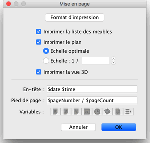
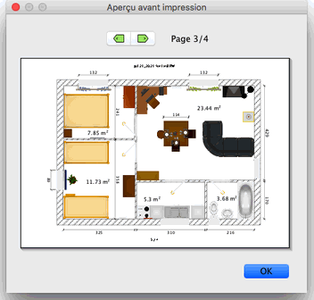

|
|
Impression d'un logement | ||
|
Pour imprimer un logement, choisissez Fichier > Imprimer....
Par d�faut, Sweet Home 3D imprime la liste des meubles, le plan et la vue 3D en cours
d'un logement, en utilisant la taille de papier, les marges et l'orientation par
d�faut. 
Dans le panneau de mise en page, vous pouvez modifier la taille et l'orientation du
papier en cliquant sur le bouton Format d'impression. Vous pouvez choisir aussi
si la liste des meubles, le plan et la vue 3D d'un logement seront imprim�s ou non. Si
vous ne voulez pas utiliser l'�chelle calcul�e automatiquement pour remplir une page,
vous pouvez choisir une autre �chelle dans le champ de saisie Echelle.
Pour vous �viter de saisir le nom exact d'une variable, utilisez les boutons Variables affich�s sous les champs de saisie En-tête et Pied de page. Comme le signe $ est r�serv� pour les variables, utilisez le code $$ si vous voulez imprimer un signe $ dans le texte en-tête ou en pied de page. Pour pr�visualiser votre mise en page � l'�cran, choisissez Fichier > Aper�u avant impression....  Dans le panneau d'aper�u avant impression, vous pouvez voir comment un logement sera imprim� page par page. Pour passer d'une page � l'autre, cliquez sur les fl�ches en haut du panneau ou utilisez les fl�ches du clavier. |
|